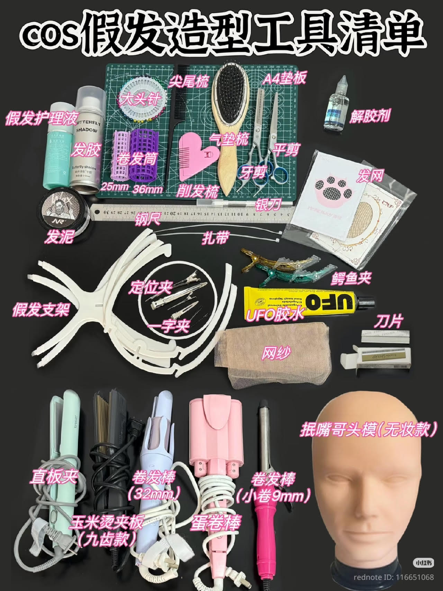

Here’s a complete list of tools you’ll need for wig styling
These are the most commonly used items in professional cosplay wig making.
Basic Cutting Tools
- Sharp Scissors (平剪)
- Thinning / Texturizing Scissors (削发梳)
- Razor Knife / Silver Knife (银刀)
- Steel Ruler (钢尺)
Styling & Curling Tools
- Hair Straightener (直板夹)
- Curling Iron 32mm (卷发棒)
- Small Curling Iron 9mm (小卷)
- Corn Hair Curler (玉米烫夹板)
- Egg Curler (蛋卷棒)
Brushes & Combs
- Paddle Brush (气垫梳)
- Tail Comb (尖尾梳)
- Wide-tooth Comb (宽齿梳)
- Detangling Brush
Clips & Holders
- Alligator Clips (鳄鱼夹)
- Sectioning Clips (定位夹 / 一字夹)
- Bobby Pins & Hair Ties (扎带)
- Wig Stand / Mannequin Head (假发支架 + 头模)
Styling Products
- Wig Glue / UFO Glue (UFO胶水)
- Hair Gel / Styling Wax (发胶 / 发泥)
- Wig Spray / Setting Spray
- Wig Conditioner & Detangler
Other Essential Tools
- A4 Cutting Mat (A4垫板)
- Wig Cap / Hair Net (发网)
- Cheesecloth / Mesh Fabric (网纱)
- Glue Remover (解胶剂)

💡 Tip: Start with basic tools first. You don’t need everything immediately!